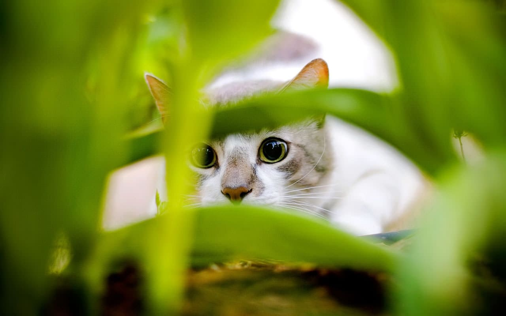
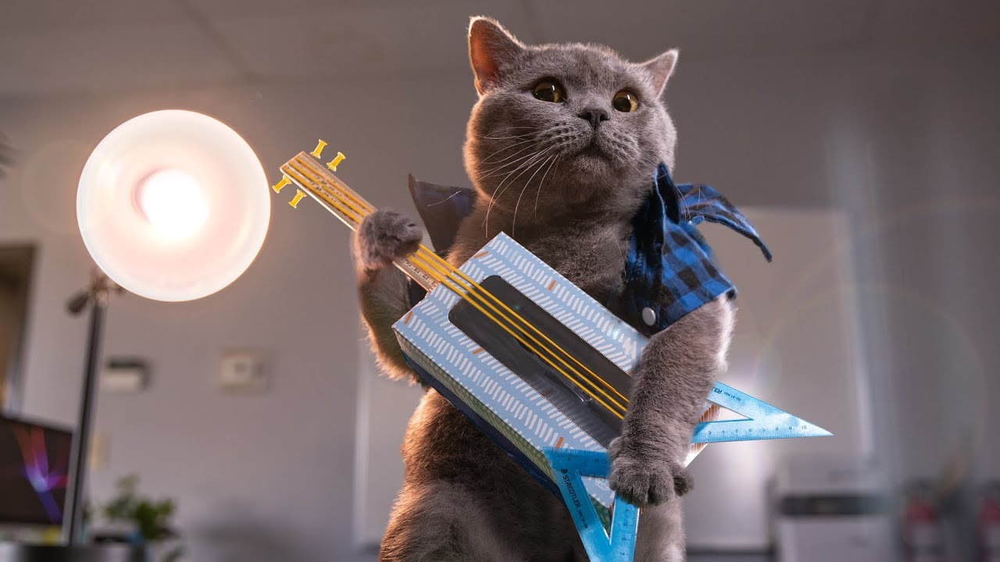

What are cats?
The cat is a domestic species of small carnivorous mammal. It is the only domesticated species in the family Felidae and is often referred to as the domestic cat to distinguish it from the wild members of the family. A cat can either be a house cat, a farm cat or a feral cat; the latter ranges freely and avoids human contact. Domestic cats are valued by humans for companionship and their ability to hunt rodents. About 60 cat breeds are recognized by various cat registries.
Компетенции

Playing guitar

Licking a snail
Hacking your ex
Kitties are so:
- Soft
- Kind
- Purrfect
But we also love:
- Cats
- Dogs
- Rabbits
Where to adopt a cat?
Thinking about adopting a cat or kitten? At Cats Protection, we believe in matching the right cat to the right home. That's why we look at everything from your potential pet's personality to where you live - creating the perfect match for both cat and owner.